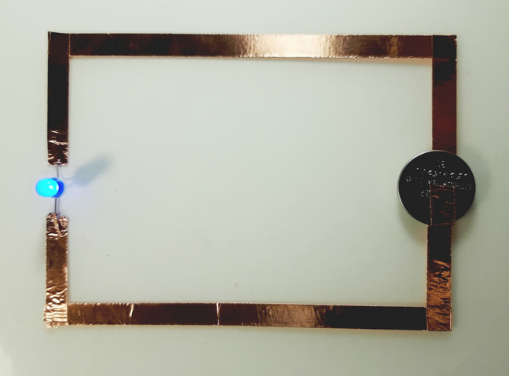
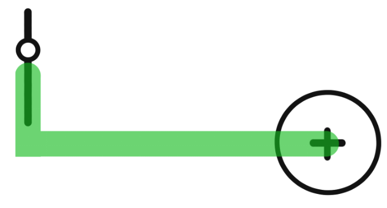
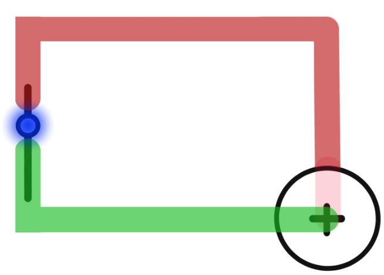

The physical part of computing relies on the concept of a circuit. Circuits allow for electricity to flow between components, driving hardware and environment interactions. This section will explain some of the vocabulary used in this area, as well as guide you through building your first circuit.
A circuit is the basic concept behind all electronic processes. It is composed of electronic components through which electricity can flow. We'll see a very simple one in the next section (Building a Circuit).
In order to recreate this using our materials, let’s learn some basic terminology:
Closed circuit - a loop that is fully connected. All circuits have a voltage source (e.g. a battery), a conductive path (e.g. copper tape or wires), and a load that uses power (e.g. the LED).
Open circuit - a loop that is disconnected at some point (making it not really a circuit at all). If your circuit doesn’t work, it is most likely an open circuit.
Light Emitting Diode (LED) - a tiny device that emits light when electricity flows through it. In a standard LED, the electricity flows from the positive (longer leg) to the negative (shorter leg). Other LEDs will have one side that is labeled with a “+” for its positive side, and a “-” for its negative.
Resistance - depending on the voltage of your battery, you may need resistance before connecting it to your LED. Resistance is used to curb the flow of the current. Resistance is measured in Ohms.
Voltage - the power of a current. The batteries we’ll be using are 3V (read: 3 volts).
Our most basic circuit will look something like this:
1. Connect the positive side of your LED to the positive side of your battery - the top of the battery is positive, and the bottom side is negative. The LED’s positive side is labeled with a “+” sign (or the “long” leg, if using a standard LED).
2. Connect the negative side of the LED to the negative (bottom) side of the battery - you can do this by placing tape underneath the battery. Your LED should light up as soon as it is securely connected.
This is a very basic example, which means there’s a lot of room for creativity! Try to create different shapes with your copper tape, or you can connect multiple circuits into one. When connecting multiple circuits, you will need multiple power sources.